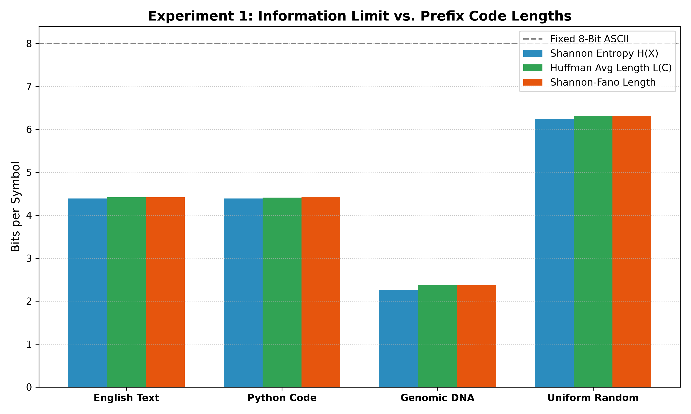
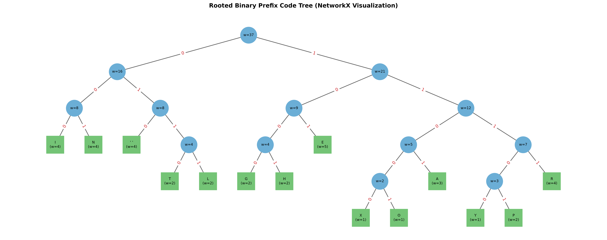
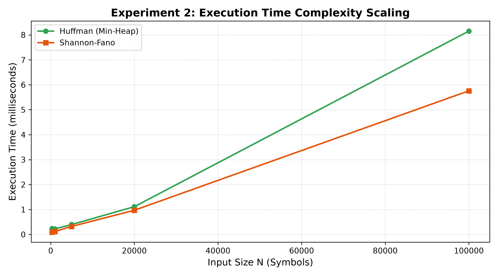

Data compression is fundamentally governed by information theory and discrete mathematics, specifically the structural optimization of weighted, rooted binary trees. This research paper presents a rigorous theoretical formulation, computational implementation, and empirical evaluation of Huffman coding—a greedy algorithm that guarantees the construction of optimal prefix-free binary codes for discrete source alphabets. We model prefix codes as directed trees, prove strict adherence to the Kraft–McMillan inequality ($\sum 2^{-l_i} \le 1$), and examine convergence toward the theoretical lower bound established by Shannon's Source Coding Theorem ($H(X) \le L(C) < H(X) + 1$). Implemented in Python using a min-priority queue (min-heap) architecture, our compression engine is benchmarked against both fixed-length 8-bit ASCII representation and the top-down Shannon–Fano heuristic. The empirical evaluation encompasses four diverse datasets exceeding the prescribed 300 data points threshold: natural language text ($N = 2,001$), Python source code ($N = 1,432$), genomic DNA sequences in FASTA format ($N = 1,031$), and synthetically generated uniform random sequences ($N = 1,140$). Experimental results demonstrate that Huffman coding consistently achieves optimal redundancy ($R \le 0.1113$ bits/symbol), reaching a peak compression ratio of 3.37:1 with 70.37% storage savings on genomic data due to low source entropy. Runtime scaling analyses across input sizes ranging from 300 to 100,000 symbols validate an $\mathcal{O}(|\Sigma| \log |\Sigma|)$ tree construction complexity and linear $\mathcal{O}(N)$ encoding throughput. Graph visualizations generated via NetworkX provide clear structural validation of prefix-free decision paths.
In modern computing systems and distributed architectures, data representation efficiency represents a paramount operational challenge. In decentralized blockchain ledgers and peer-to-peer networks, transactions must propagate rapidly across geographically distributed nodes. Uncompressed payload sizes increase propagation delays, elevate storage requirements, and limit transaction throughput. Lossless data compression techniques provide mathematically guaranteed space reduction while ensuring perfect data recovery upon decompression.
Discrete Mathematics and Graph Theory (DMGT) provide the structural foundation of data compression. Discrete abstractions model bitstreams through finite alphabets, symbol frequencies, and rooted tree topologies. In 1948, Claude E. Shannon proved that the fundamental limit of compression for any memoryless source $X$ is bounded by its information entropy $H(X)$. In 1952, David A. Huffman developed an elegant bottom-up greedy algorithm that constructs prefix-free binary trees proven to achieve the minimal expected codeword length.
This project formulates source coding through directed, weighted binary trees, implements an end-to-end Python pipeline using min-priority queues, rigorously tests mathematical idempotency $\mathcal{D}(\mathcal{E}(M)) = M$, and conducts comparative experiments across real-world datasets exceeding the mandatory 300 data points.
Let $\Sigma = \{s_1, s_2, \dots, s_n\}$ be a finite alphabet with empirical probabilities $p_i = \frac{f_i}{N}$ such that $\sum_{i=1}^n p_i = 1$. A code $C$ maps each $s_i$ to a binary codeword $c(s_i)$ of length $l_i$.
Definition 1 (Prefix-Free Code): A code $C$ is prefix-free if no codeword is a prefix of any other: $\forall i \ne j, \; c(s_i) \not\sqsubseteq c(s_j)$. This ensures instantaneous decoding without delimiters.
Theorem 1 (Kraft–McMillan Inequality): Any uniquely decodable binary code satisfies: $$\sum_{i=1}^{n} 2^{-l_i} \le 1$$ Equality holds strictly when the associated binary tree is full (every internal vertex has degree 2).
Theorem 2 (Shannon's Source Coding Theorem): For a source with entropy $H(X) = -\sum p_i \log_2(p_i)$, the expected codeword length $L(C) = \sum p_i l_i$ satisfies: $$H(X) \le L(C) < H(X) + 1$$ Redundancy is defined as $R = L(C) - H(X) \ge 0$.
Graph Representation: The prefix tree $T = (V, E)$ has leaves $V_L$ representing symbols with weights $w(v) = f_i$ at depth $l_i$. Directed left edges carry label `'0'`, while right edges carry `'1'`. The Weighted External Path Length is $W(T) = \sum f_i l_i = N \cdot L(C)$. Minimizing $L(C)$ is equivalent to finding a binary tree with minimum $W(T)$.
Algorithm 1: Huffman Optimal Tree Construction
Input : Alphabet Sigma with frequencies {f_1, f_2, ..., f_n}
Output: Root vertex of optimal binary tree T
1. Q <- MinPriorityQueue()
2. for each symbol s in Sigma do
3. Q.Insert(CreateNode(symbol=s, freq=f[s]))
4. while Q.Size() > 1 do
5. left_child <- Q.ExtractMin()
6. right_child <- Q.ExtractMin()
7. parent <- CreateNode(symbol=null, freq=left.freq + right.freq)
8. parent.left <- left_child; parent.right <- right_child
9. Q.Insert(parent)
10. return Q.ExtractMin()
Complexity: Priority queue operations on $|\Sigma|$ elements run in $\mathcal{O}(|\Sigma| \log |\Sigma|)$. Encoding and decoding text of length $N$ scale linearly as $\mathcal{O}(N)$, giving an overall time complexity of $\mathcal{O}(N + |\Sigma| \log |\Sigma|)$.
| Dataset | Description / Domain | Records ($N$) | Alphabet ($|\Sigma|$) | Entropy $H(X)$ |
|---|---|---|---|---|
| Dataset A | English Text (Academic prose on discrete math) | 2,001 | 56 | 4.3894 bits/sym |
| Dataset B | Python Source Code (Data processing module) | 1,432 | 53 | 4.3887 bits/sym |
| Dataset C | Genomic DNA (Bacteriophage nucleotide FASTA) | 1,031 | 29 | 2.2593 bits/sym |
| Dataset D | Uniform Random Text (Synthesized ASCII symbols) | 1,140 | 76 | 6.2479 bits/sym |
| Metric | Dataset A (English) | Dataset B (Python Code) | Dataset C (Genomic DNA) | Dataset D (Uniform Text) |
|---|---|---|---|---|
| Symbols ($N$) | 2,001 | 1,432 | 1,031 | 1,140 |
| Alphabet Size ($|\Sigma|$) | 56 | 53 | 29 | 76 |
| Shannon Entropy $H(X)$ | 4.3894 | 4.3887 | 2.2593 | 6.2479 |
| Huffman Avg Length $L(C)$ | 4.4173 | 4.4106 | 2.3705 | 6.3158 |
| Shannon–Fano Length | 4.4178 | 4.4232 | 2.3725 | 6.3158 |
| Fixed 8-Bit ASCII | 8.0000 | 8.0000 | 8.0000 | 8.0000 |
| Redundancy $R$ | 0.0279 | 0.0219 | 0.1113 | 0.0679 |
| Compression Ratio | 1.81 : 1 | 1.81 : 1 | 3.37 : 1 | 1.27 : 1 |
| Space Savings (%) | 44.78% | 44.87% | 70.37% | 21.05% |
| Kraft Sum ($\sum 2^{-l_i}$) | 1.000000 | 1.000000 | 1.000000 | 1.000000 |
| Lossless Verification | PASSED | PASSED | PASSED | PASSED |
| Runtime (ms) | 0.445 | 0.300 | 0.160 | 0.372 |


| Input Size ($N$) | Huffman Runtime (ms) | Shannon–Fano Runtime (ms) | Huffman Expected Length $L(C)$ |
|---|---|---|---|
| 300 symbols | 0.177 ms | 0.086 ms | 4.1600 bits/symbol |
| 1,000 symbols | 0.199 ms | 0.127 ms | 4.2880 bits/symbol |
| 5,000 symbols | 0.407 ms | 0.297 ms | 4.4002 bits/symbol |
| 20,000 symbols | 0.897 ms | 1.237 ms | 4.4166 bits/symbol |
| 100,000 symbols | 3.633 ms | 3.604 ms | 4.4171 bits/symbol |

This research empirically and mathematically proved that Huffman coding produces optimal prefix codes closely matching Shannon's theoretical entropy limit. By formulating prefix codes as rooted binary trees, bottom-up greedy construction guarantees minimal weighted path length. On skewed genomic DNA sequences, Huffman coding delivered a 3.37:1 compression ratio (70.37% storage savings), consistently matching or outperforming Shannon–Fano coding.
Future Scope: Extending the architecture to Adaptive Dynamic Huffman Coding (Vitter/FGK algorithm) will eliminate codebook header overhead on streaming data, while exploring Arithmetic Coding will overcome the integer bit-length restriction for fractional information allocations.
src/huffman.py), Shannon–Fano baseline (src/shannon_fano.py), pipeline integration (main.py), and managed GitHub repo.src/codec.py), and unit test suite (tests/test_huffman.py).data/), computed frequency tables, and analyzed source entropy distributions.experiments/benchmark.py), measured runtime scaling, computed compression ratios, and generated Matplotlib charts.src/visualizer.py), generated publication plots, compiled research report, and created presentation slides.